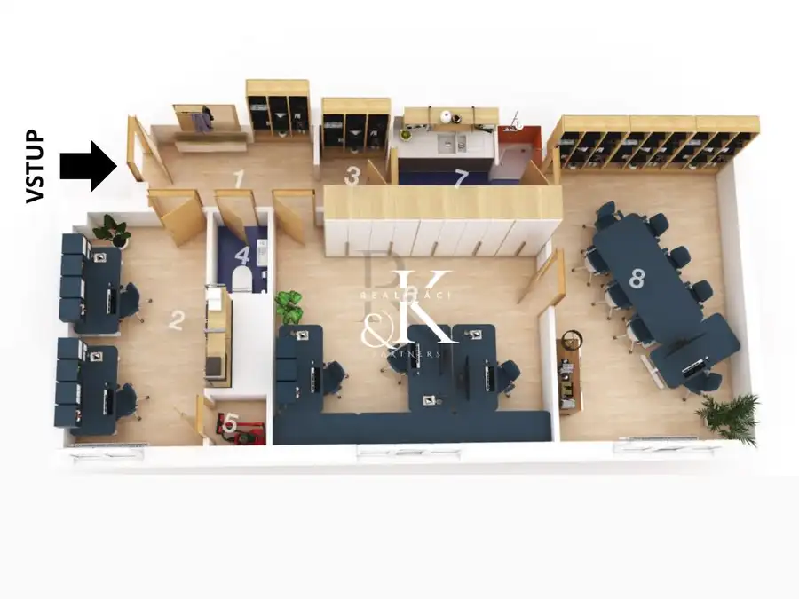
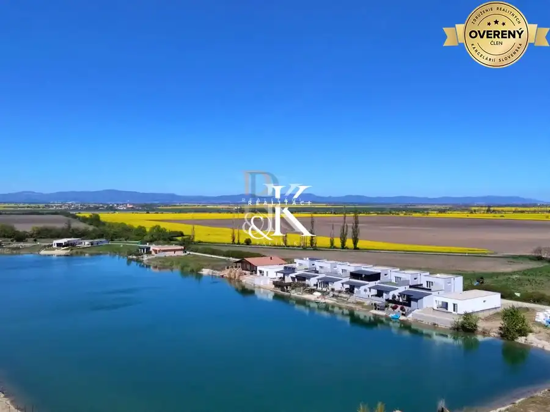
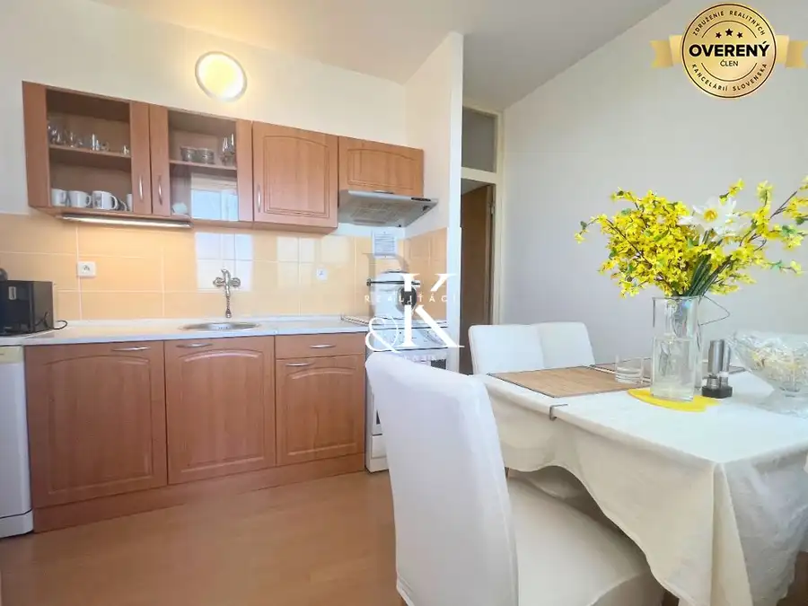

Predaj stavebný pozemok 710 m², Cífer - časť Jarná
Cífer
- Plocha710 m²
- Poschodie0.
- Vlastníctvoosobné
O nehnuteľnosti
Hľadáte miesto pre rodinný dom, alebo investičnú príležitosť?
Chcete pokojné bývanie, dobrú občiansku vybavenosť v rámci obce a rýchly prístup na diaľnicu či mesta? Cífer ponúka práve túto kombináciu.
Realitná kancelária RK Realiťáci ponúka exkluzívne na predaj stavebný pozemok s výmerou 710 m² v obci Cífer, časť Jarná.
POZEMOK
- výmera 710 m²
- šírka pozemku cca 14,8 m
- rovinatý
- čiastočne oplotený
- priamy vstup na pozemok z asfaltovej komunikácie
- prístupová komunikácia vo vlastníctve obce Cífer
- v susedstve ďalšie 2 pozemky a zástavba rodinných domov
elektrina, obecná voda a kanalizácia pri pozemku, v obci sa nachádza plyn (cca 50 m od pozemku)
Pozemok je na liste vlastníctva vedený ako orná pôda a schválený v územnom pláne na výstavbu rodinných domov. Možnosť výstavby rodinného domu s obytným podkrovím, alebo dvojdomu s dvomi bytovými jednotkami.
UPI je k dispozícii na vyžiadanie.
PREČO CÍFER?
V obci nájdete potraviny CBA a COOP, poštu, bankomat, reštaurácie, kaviarne, lekárne, čerpaciu stanicu, ambulancie praktického lekára, stomatológa, materskú a základnú školu, knižnicu, futbalové ihrisko, autoservis, káblovú televíziu, telocvičňu, zmrzlináreň a ďalšie služby.
Súčasťou lokality je aj vlaková stanica a autobusová doprava, takže pri každodennom dochádzaní nie ste odkázaní výhradne na auto.
Obec pravidelne vylepšuje infraštruktúru a tiež organizuje kultúrne a športové podujatia. Nájdete tu cyklotrasy, miestne Jazero a v blízkosti aj letné kúpalisko Pác.
DOSTUPNOSŤ
14 km - Trnava
44 km - Bratislava
Dobré napojenie na hlavný ťah umožňuje pohodlné spojenie s Trnavou aj ďalšími lokalitami v regióne.
Cena nehnuteľnosti o výmere 710 m²: 142.000,-EUR vrátane provízie a vyhotovenia štandardnej zmluvnej
dokumentácie.
Bez tiarch kúpou voľný.
Údaje uvedené v inzeráte majú informatívny charakter. Texty, fotografie, pôdorysy a videá sú autorským dielom a majetkom realitnej kancelárie RKR & Partners s.r.o.
Parametre
| Rozloha pozemku | 710 m² |
|---|---|
| Poschodie | prízemie |
| Vlastníctvo | osobné |
| Voda | verejný vodovod |
| El. napätie | 230/400V |
| Kanalizácia | áno |
| Inžinierske siete | blízko |
| Terén | rovina |
| Prístupová cesta | asfaltová cesta |
| Pripravené na výstavbu | schválené v územnom pláne |
| Dátum zverejnenia | 5. 9. 2026 |
Kde to je
Mohlo by Vás zaujímať

Nebytové priestory9 280 000 €Nebytový priestor s možnosťou zmeny v užívaní na bývanie, Justičná, BA Staré Mesto, Bratislava 3-izbový64 m² Ponúkame na predaj priestor s výmerou 64 m2, situovaný na zvýšenom prízemí nizkopodlažného bytového domu na Justičnej ul. Bratislava I - Staré Mesto.…
Rodinné domy10 345 000 €Predaj - novostavba, tehlový dom pri jazere, Boldog pri Senci Boldog 5-izbový200 m² Realitná kancelária Realiťáci ponúka exkluzívne na predaj 5 i rekreačný dom s pozemkom o výmere 330 m2. Dvojpodlažný tehlový rekreačný dom sa…
Byt10 232 000 €Predaj 2 I byt s loggiou a pivnicou, Bratislava Rača Rača, Bratislava 2-izbový62 m²12. podlažie Realitná kancelária RK Realiťáci ponúka exkluzívne na predaj čiastočne zrekonštruovaný, udržiavaný a presvetlený 2 izbový byt, s prakticky riešenou…